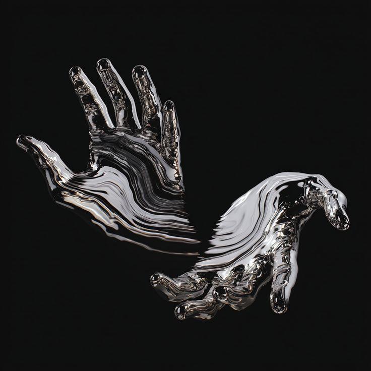
We are building a family of developer tools under one house: ALKMY. The frontend framework is ALB'DO. Under it sit FORGE (backend), PHOSPHOR (the client runtime), CTRNI'TAS (AI), and RUB'DO (fintech). Your job is to give this house a face someone remembers after one glance and trusts after ten seconds.
Base matter, transmuted. Every product takes something raw — code, data, money, thought — and returns it refined, mirror-finished, permanent. That is literally what alchemy is, and it is exactly what these tools do.
Our competitors look like infrastructure: cold, technical, forgettable. We are going to look like a rare object under museum light — heavy, precious, a little uncanny. Developers should feel they are holding something crafted, not configured.
Not a logo request. It is the thematic spine — the idea, the material, the palette, the typography, the rules — so that every artifact you make, and every one we make after you, belongs to the same world. Read it once end-to-end before you sketch.
North star. If a stranger saw a single frame of our work with no logo on it, they should still feel: dark, precious, transmuted, slightly alive. Chrome in a void, breathing under a rim of light.
Twenty-four references were collected independently. They agree with each other almost perfectly — which is the strongest signal we have. Here is what they say, together.
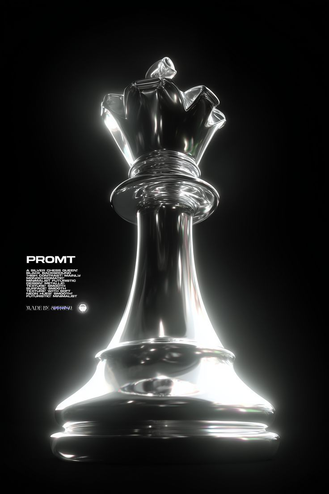
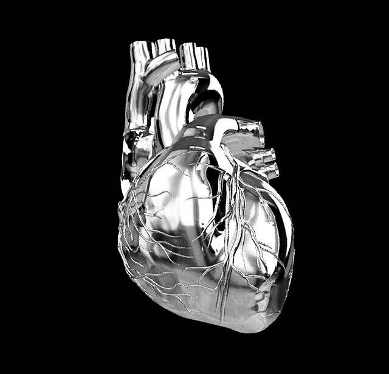
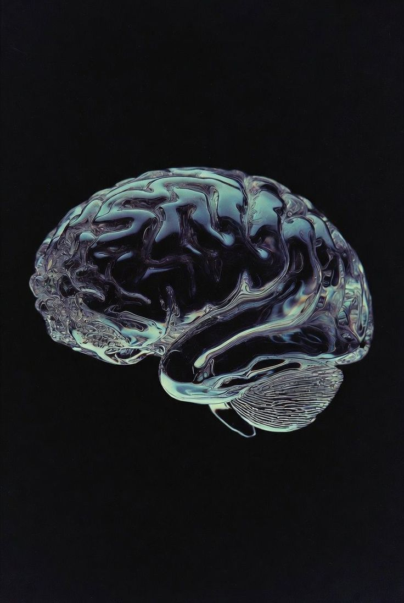
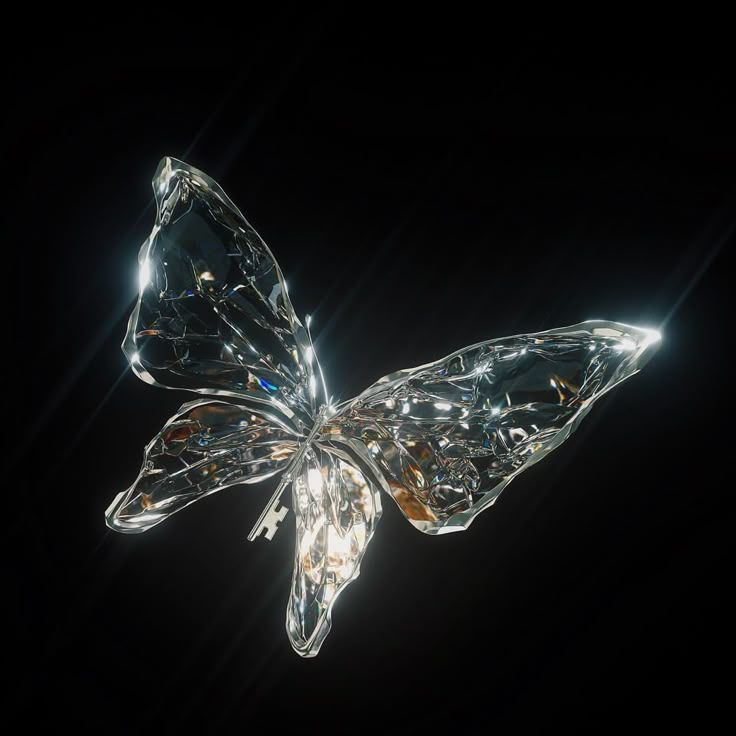
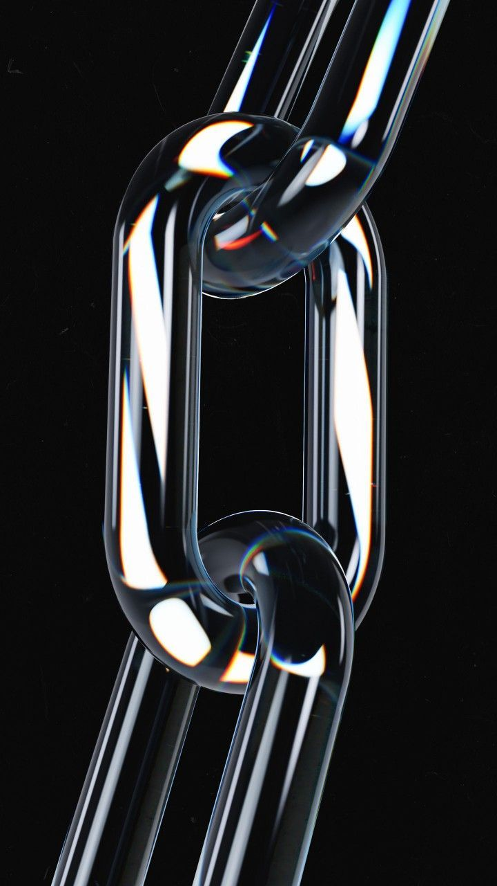
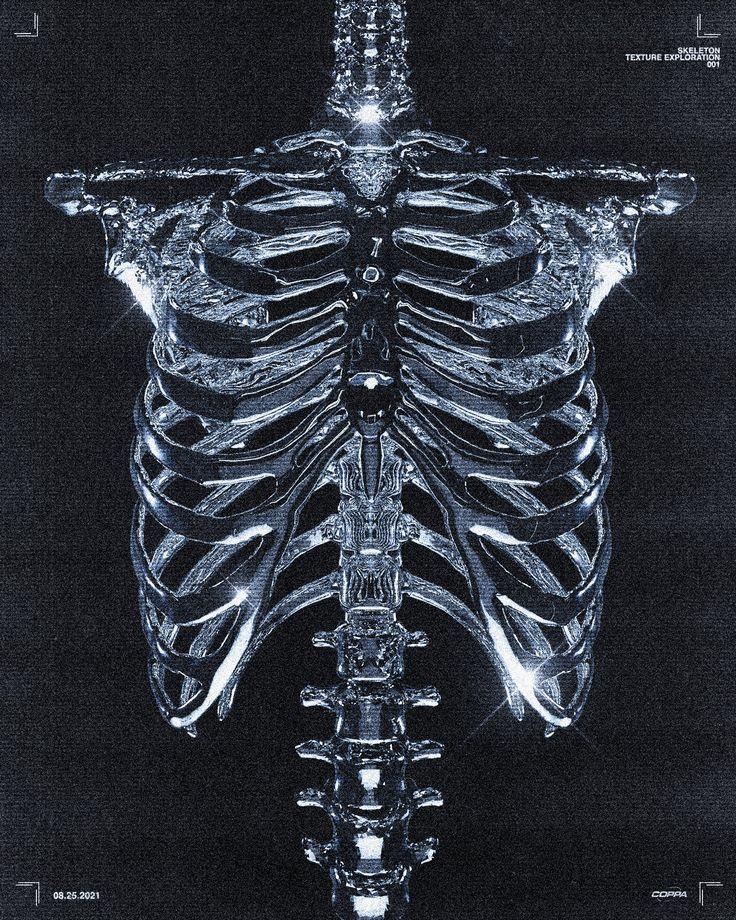
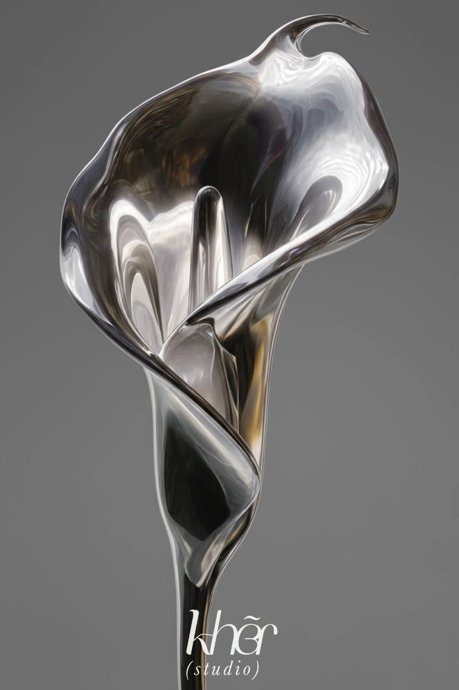
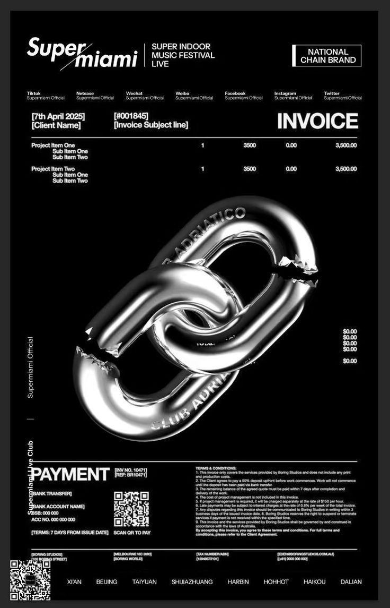
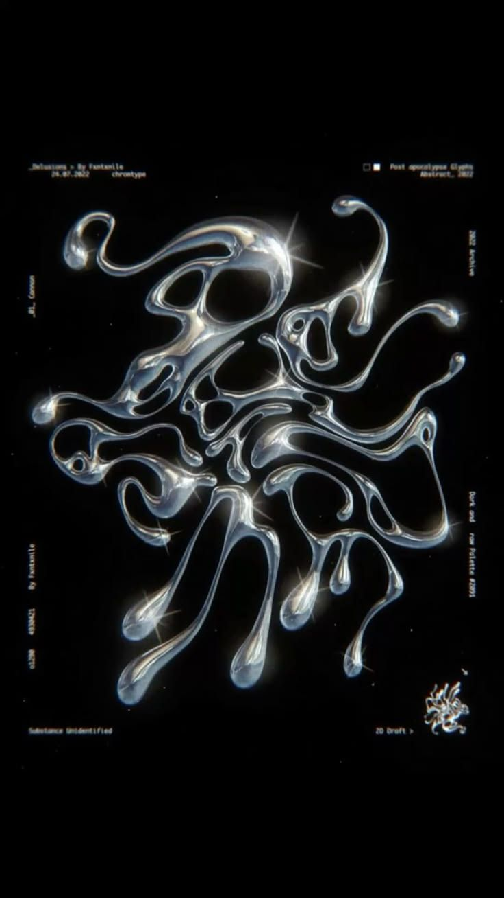
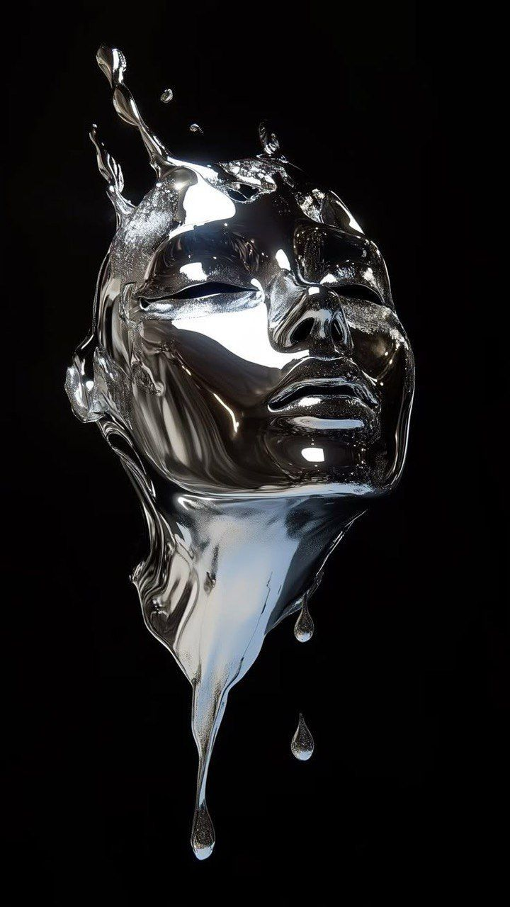
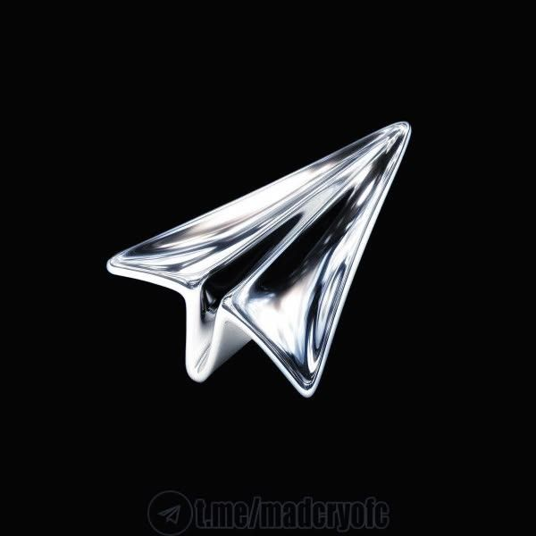
Alchemy's magnum opus — the Great Work — is a sequence of stages that turn prima materia (raw, black, formless matter) into the lapis (the philosopher's stone: perfected, permanent, alive). The classical stages are colours. Our product names are those stages. This is not decoration bolted on afterward — it is the reason the names exist, and it gives every product a fixed place, a colour, and a role.
The prima materia — dissolution, the crucible, matter broken down to be remade. Our backend: the black vessel where raw input is transmuted. Everything is born from this black; ember heat inside the dark.
Washing to silver. The mirror stage — purification, the moon, reflection. Our frontend: the face users see, rendered as polished chrome. It reflects.
The solar dawn — the awakening of wisdom and light. Our AI: intelligence breaking over the work like gold at sunrise. Gold, glass, the lit brain.
The final work — the stone achieved, blood, life, value made real. Our fintech: the point where the whole process becomes worth something. Oxblood red.
The four coloured stages are the four products. One name isn't a colour-stage — it is the light that makes the whole opus visible:
And ALKMY is the alchemist — the house that holds all four stages and the light.
Why this is the right spine. It is not a theme we chose — it is the meaning already inside the names. FORGE, ALB'DO, CTRNI'TAS and RUB'DO are the four coloured stages of the opus, in order — Nigredo, Albedo, Citrinitas, Rubedo. PHOSPHOR is the light that reveals them. The board's chrome anatomy is exactly what the opus promised: the mortal, made incorruptible. Everything agrees. We just have to draw it.
The core deliverable of this brief. Each name is tied to its meaning, its stage, its colour, its role — and to the exact references on the board that it should look like.
The parent brand — the practice, the athanor-keeper. Neutral chrome; holds all five children without belonging to any one stage. Its mark is the sum of the system: a sigil, a set of glyphs, a mirror. Tone: quiet, total, museum-grade.
The flagship. Pure liquid silver chrome — the reflective, purified stage. This is the product users touch, so it is the most polished and the most alive: the reaching hands, the mirror queen, the face reforming out of metal.
The prima materia — the black vessel where raw matter is broken down and remade. Structural, load-bearing, hidden power. The one place we allow heat — ember and molten-white — glowing inside the dark. Chains (links, connection, load) and the mechanical glass heart (the engine of life) are its images.
The runtime that makes it luminous on screen — named for phosphorus, the light-bringer, and for the phosphor that glows inside a display. Its signature is the bloom itself: the white rim-light, the lens flare, the spark. Cool white, a whisper of phosphor-green.
The intelligence layer. The stage where light turns gold — the awakening of mind. Introduces solar gold into the palette, used only here. The glass brain lit from within; thought rendered as clear, refracting crystal.
The final stage — the philosopher's stone achieved, blood, life, worth. The only product that carries oxblood red, used with restraint against the chrome. The anatomical heart (life, the pump, circulation) is its emblem.
ALB'DO. RUB'DO. CTRNI'TAS. The dropped vowel is permanent and intentional — a wordmark rule, not a typo. It has a meaning, and that meaning is the whole brand in one keystroke.
Alchemy's core move is the removal of the superfluous — distillation, boiling away the impure until only the essence remains. The apostrophe is the seam where base matter was cut away. The word is distilled: the vowel evaporates, the mark shows where it used to be.
Treat the apostrophe as the hero glyph of the whole system, not a stock punctuation mark. Options to explore:
It should be legible at 12px and iconic at 2 metres. It can stand alone as a favicon / app-icon seed.
Colour enters only as chromatic aberration — the cyan/magenta seam at the edge of refracted light. Used like salt. The base brand is monochrome; the spectrum is a rumour at the edges.
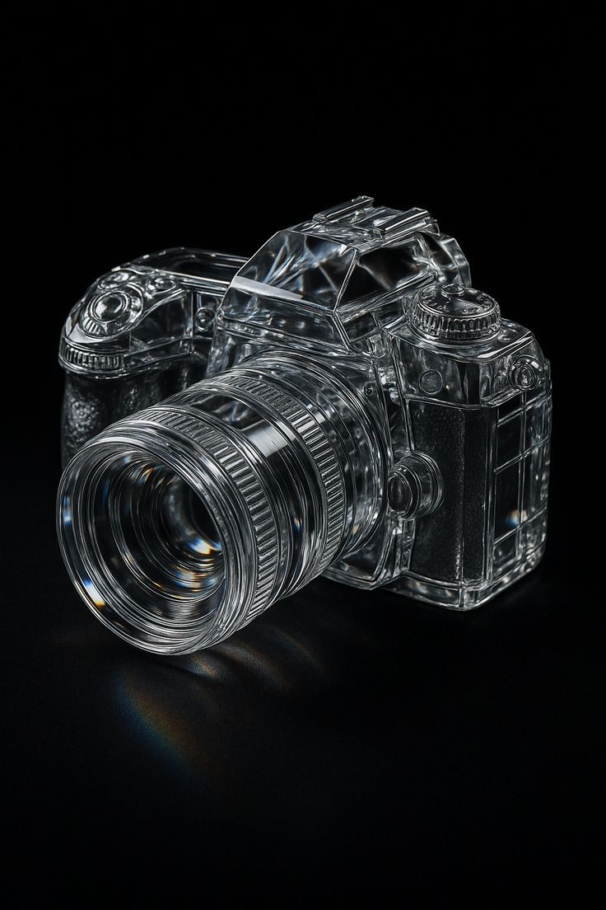
The house is silver. Each child may carry one stage-colour, used sparingly against chrome — never a full flood. This keeps the family unified and the products distinct.
Rule of thumb: 90% monochrome (black + chrome + glass), 10% stage-colour, and aberration only at light edges. If a comp looks colourful, it is wrong.
Display — a heavy neo-grotesque. Swiss, tight, uppercase, confident. Think the weight of Helvetica Now Display / Neue Haas Grotesk / Archivo Black. It carries the wordmarks and the big statements. Set it tight — negative tracking, letters almost touching.
Marginalia — a monospace. Everything technical is set in mono: dates, versions, coordinates, captions, the "PROMT / spec" language, barcodes. It is the sound of a laboratory logbook. Small, wide-tracked, uppercase.
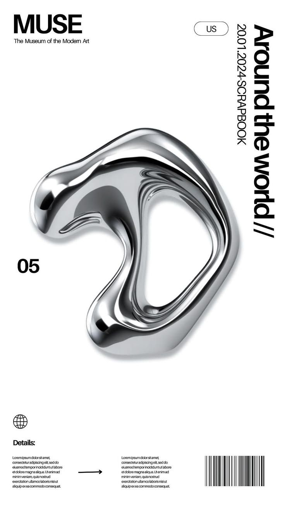
The board keeps returning to the body — heart, brain, ribcage, hands, a face — always cast in chrome or glass, never in flesh. This is the emotional core of the brand, and it is the truest thing alchemy ever said.
The Great Work was never really about making gold. It was about making the mortal incorruptible — taking what decays and rendering it permanent, luminous, whole. A heart that will never stop. A hand that stays reaching.
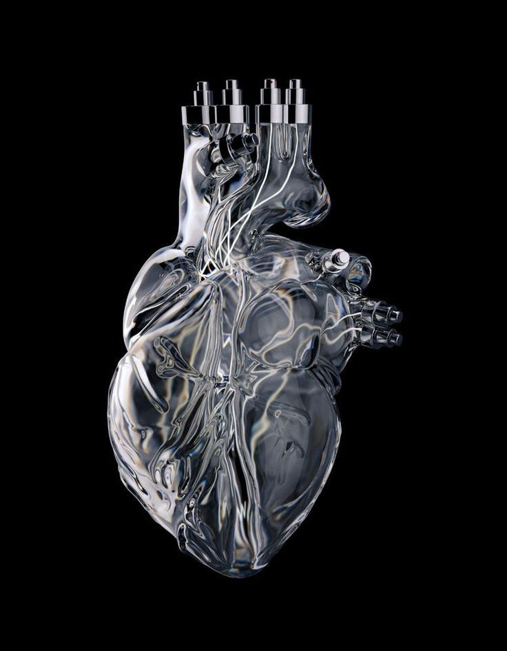
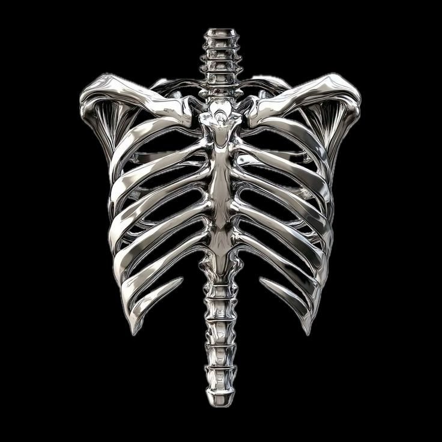
Handle with care. This is the one place the brand is allowed to be tender. It should feel like something held, not something dissected — the wish that the things we love could be made to last. Draw it the way you'd draw a relic, not a diagram.
The narrative undertone of the whole house is the myth of Phaethon (and his cousin Icarus) — the mortal who took the reins of the sun's chariot and flew too close. But we are not telling the story of the fall. We are telling the story of the view from above — the moment a person who was told "you can't" sees the whole world laid out beneath them, because they dared to fly the machine themselves.
That is what building on ALKMY should feel like: ordinary people handed the reins of the sun. The board's reaching hands, paper plane, and butterfly are that myth — ascent, flight, metamorphosis, the chariot of gold (Citrinitas).
transmute · refine · distil · forge · mirror · bloom · incorruptible · prima materia · the Great Work · the view from above.
disrupt · seamless · leverage · synergy · next-gen · game-changer · anything a hundred other startups already said.
If you remember nothing else, remember these. They keep every future artifact inside the same world.
The one-frame test. Cover the logo. If the frame still reads dark · precious · transmuted · slightly alive, it's ALKMY. If it reads generic SaaS, start over.
Reference plates follow. Every image that shaped this brief is indexed on the next page with what it contributes.
Every source · what it contributes to the system
Albedo silver + rim-bloom + "PROMT" spec caption. The polished flagship object.
Links = connection. Prismatic cyan/magenta seams — the accent rule, in the wild.
Swiss layout + chrome blob + barcode + index number. Composition language.
Anatomy transmuted to silver. The body made permanent.
Flight, ascent, "send." The Phaethon/Icarus motif, everyday form.
Glass anatomy + halftone grain + corner ticks + mono annotation. Lab-plate framing.
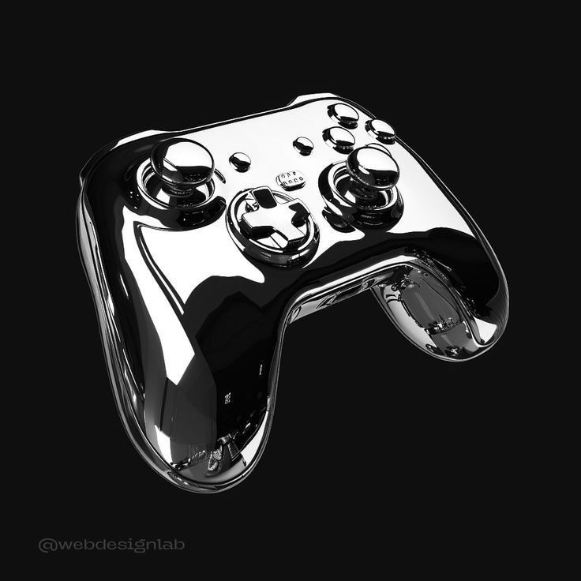
An everyday object transmuted to precious material. Product-as-artifact.
Diacritic wordmark precedent (the tilde). Liquid-metal botanical.
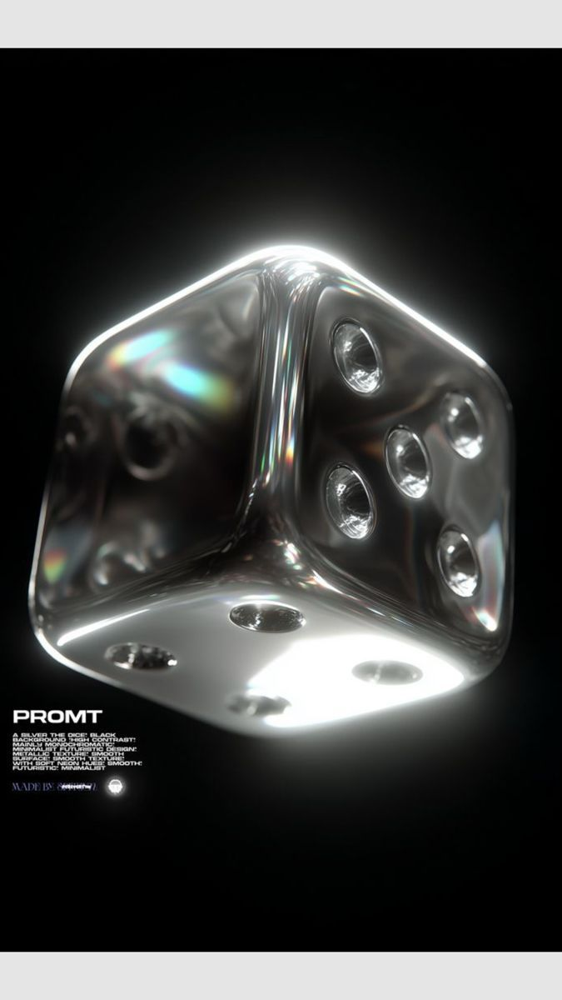
Aberration + "PROMT" caption. Craft & chance, mirror-finish.
Intelligence as clear crystal → CTRNI'TAS. Thought you can see through.
The full spec-sheet language — barcodes, city lists, broken chrome chain.
The emotional core → RUB'DO. Life & value, cast in silver.
Seeing / clarity. A transparent machine — the CTRNI'TAS lens.
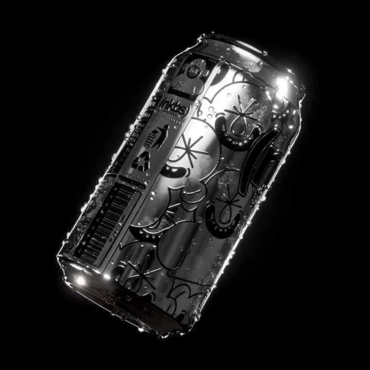
An alchemical sigil system on packaging. Seed for the house glyphs.
Body + machine fused — the engine of life. FORGE meets anatomy.
Liquid-metal custom type + mono marginalia + starbursts. Glyph language.
Creation / reaching / the gap that never closes → ALB'DO & the myth.
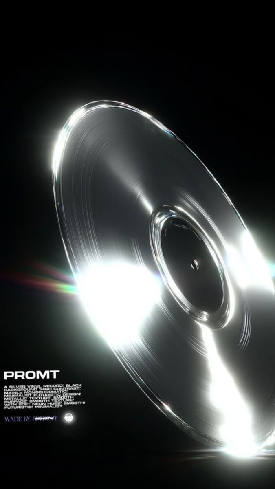
Resonance, spin, halation flare → PHOSPHOR's bloom.
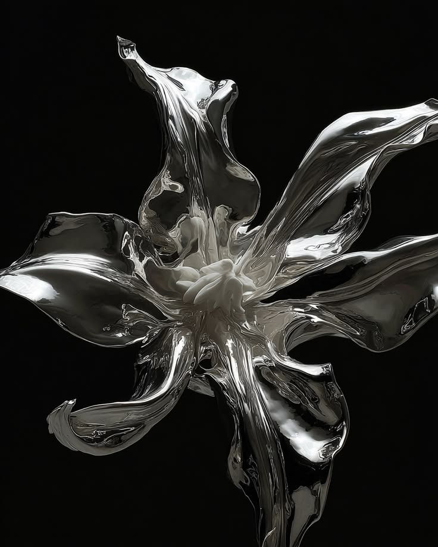
Opening, botanical transmutation. Beauty in permanent metal.
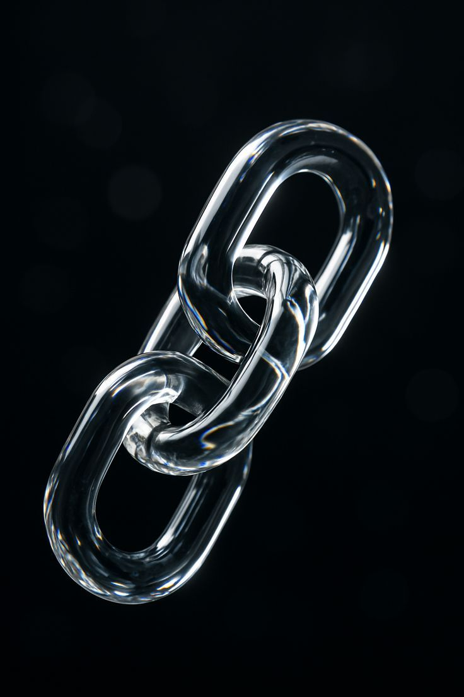
Links, clarity, connection — the cleaner, quieter chain.
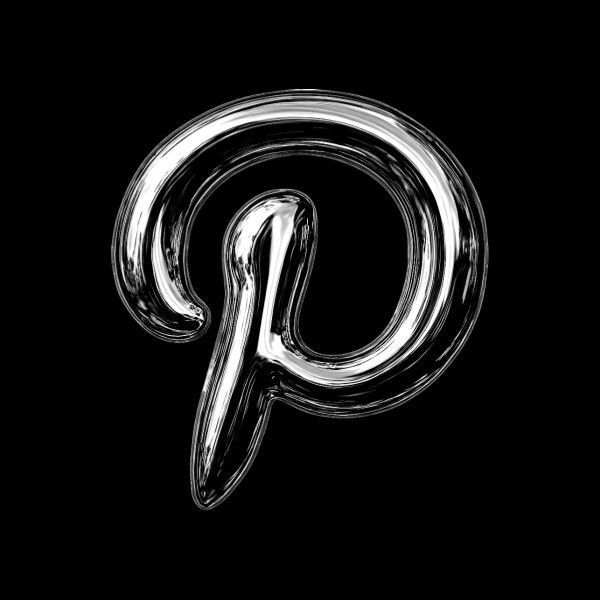
A letter rendered as a liquid-metal object — wordmark-as-sculpture.
The self dissolving & reforming — transmutation of the mortal.
Metamorphosis, the soul, fragile-yet-eternal → the myth & PHOSPHOR spark.